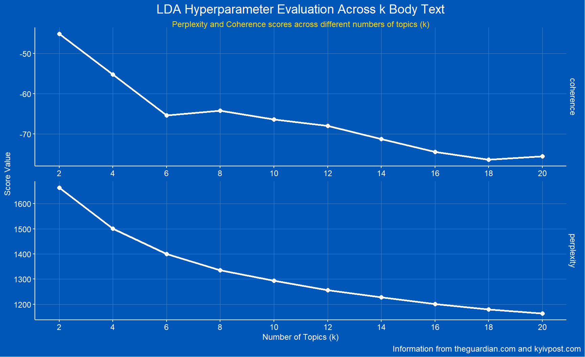
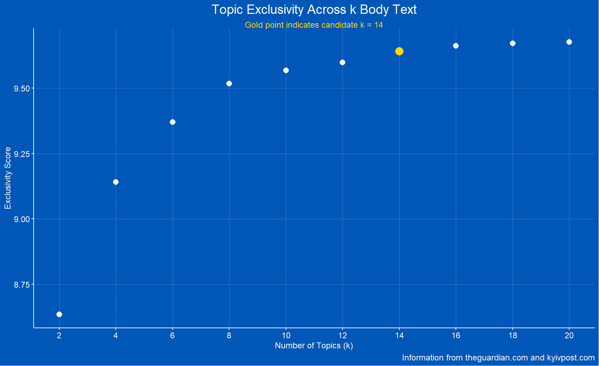
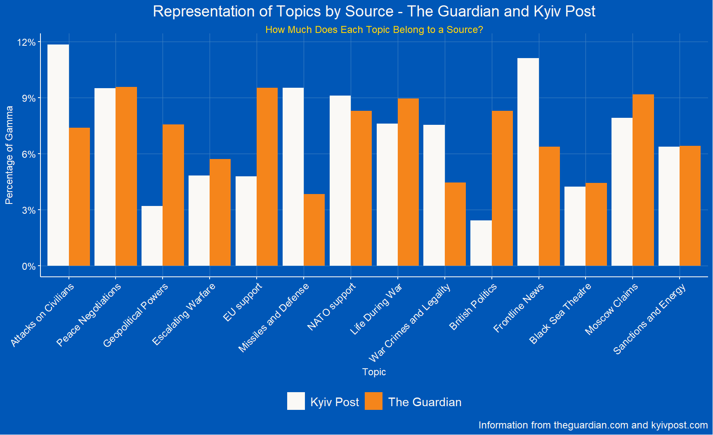
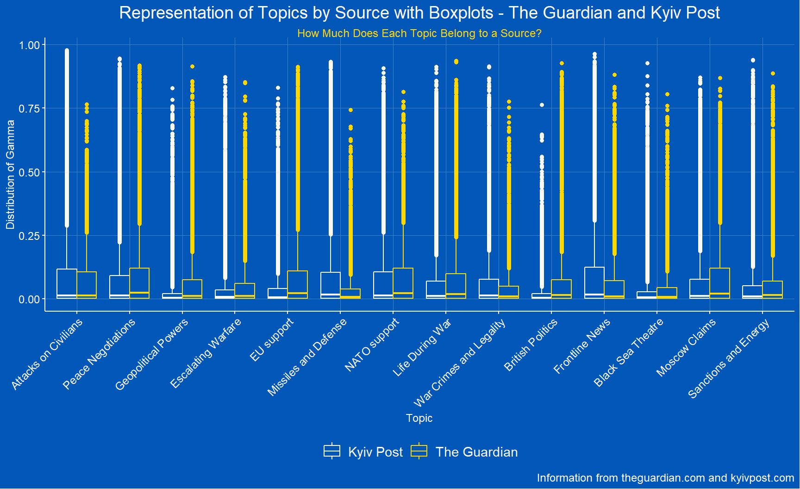
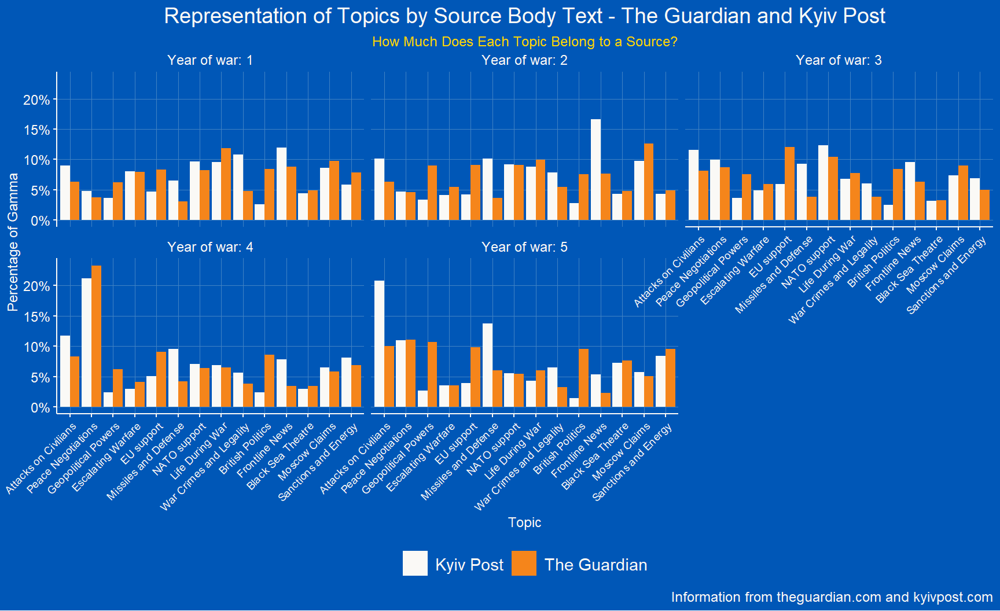
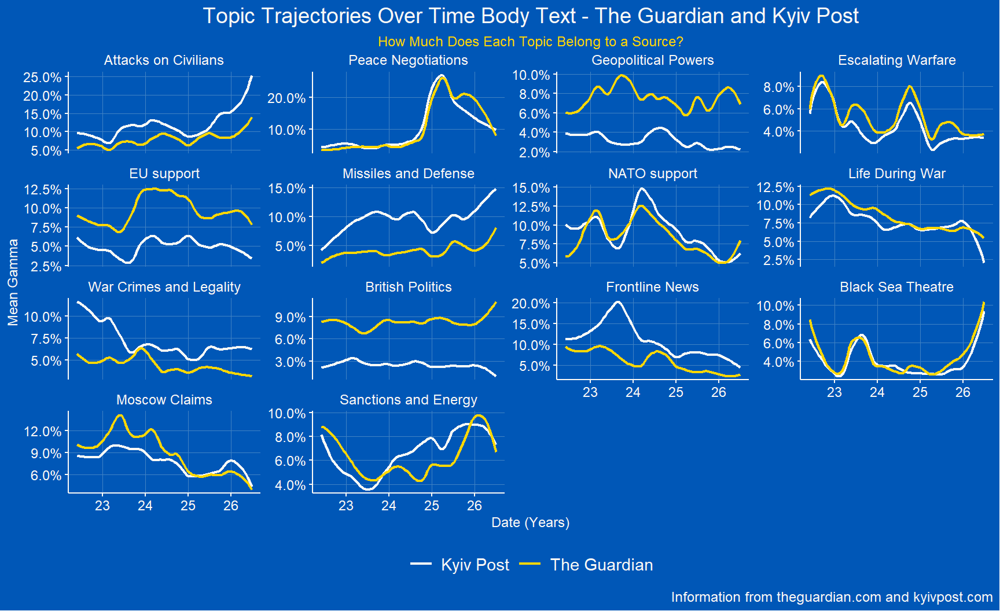
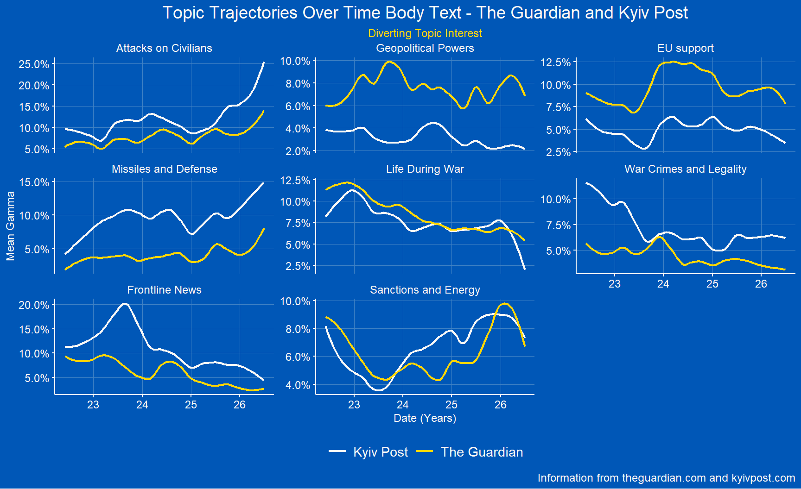
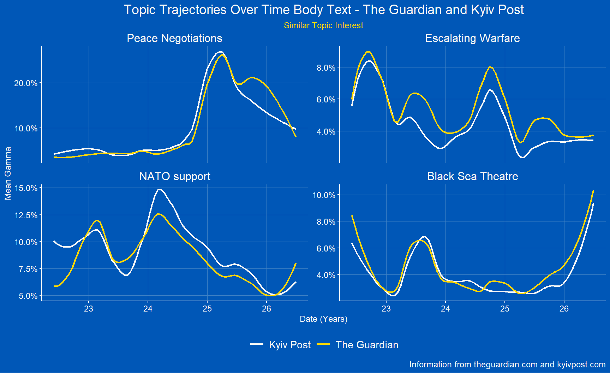

A Comparative Topic Analysis of 4 and a Half Years of War Reporting on the Full Scale Russian Invasion of Ukraine between the Western and Ukrainian Perspectives
Author
Wietse Moors
Published
August 21, 2026
Code
# Tidyverse paradigmlibrary(dplyr)library(tidyverse)library(purrr)# Date and timelibrary(lubridate)# API and webscrapinglibrary(rvest)library(httr2)library(guardianapi)# Visualizationslibrary(ggplot2)library(patchwork)library(ggthemes)library(ggrepel)library(scales)# Text analyisislibrary(textstem)library(tidytext)library(textdata)library(topicmodels)library(textmineR)library(topicdoc)library(reshape2)library(textclean)library(sentimentr)
Code
# Thematically Ukrainian color blue as background, Ukrainian yellow as accent, white for readabilitymy_theme_elements <-theme( panel.background =element_rect(fill ='#0057B7'),plot.background =element_rect(fill ='#0057B7'),legend.background =element_rect(fill ='#0057B7'),legend.text =element_text(color ='#FAF9F6', size =11),plot.title =element_text(color ='#FAF9F6'),plot.subtitle =element_text(color ='#FFD700', size =9),plot.caption.position ='plot',axis.text =element_text(color ='#FAF9F6'),axis.title =element_text(color ='#FAF9F6'),plot.caption =element_text(color ='#FAF9F6', size =9, hjust =1),panel.grid.major =element_line(color ="#4082c4"),panel.grid.minor =element_blank(),strip.text =element_text(color ='#FAF9F6'),axis.line =element_line(color ='#FAF9F6'),axis.ticks =element_line(color ='#FAF9F6') )
1 INTRODUCTION
On the 24th of February 2022 Russia invaded Ukraine in what would turn out to be a protracted war which has caused substantial loss of human life. News coverage exploded across the West immediately after the 24th, condemning the invasion (Chernov, 2023). As the war dragged, however, discourse of the West changed from the shock of the invasion to fatigue, in which the duration and salience of the war are significant factors, among others (Holesch & Martill, 2026). News cycles follow a similar pattern of interest and waning interest, even for events as dramatic as the Russo-Ukrainian war (Chernov, 2023).
Our news shapes the way we perceive war and conflicts. Audiences, sponsors, the state, and other actors have various stakes in the news we consume daily. Different topics are featured in different news sources, and what is important to one news journal is not necessarily important to another (Akinboade et al., 2023). The Russian invasion of Ukraine may fatigue people in the West but is unignorable for people in Ukraine. An important role is laid away for news journals, making the war salient for those that don’t live it.
There are three shortcomings when it comes to the research of how news journals talk about the Russian war in Ukraine:
Much of the research is done on small timeframes, failing to consider the entirety of the protracted nature of the war.
The research often fails to consider the Ukrainian perspective. Or when it does, does not treat Western and Ukrainian perspectives as different
Much of the research focuses on news and emotional frames rather than underlying latent topical structures.
Many of the research done specifically on the Russo-Ukrainian war only consider short timeframes. And while these studies are often comparative, a Ukrainian perspective is often missing or lobbed together with Western perspectives (Akinboade et al. 2023, Chernov 2023, Hinck, Jiang 2024, Kamyanets 2025). Furthermore, none of them utilize big data strategies to analyze large amounts of text data. A comparative project between a wide array of Western and domestic Ukrainian news sources (among others), was made by Mohanty et al. and is available on arxiv.com (Mohanty et al., 2026). While the project is useful, it covers the war from the beginning to August 2024, which does not follow the full length of war as of the time of writing.
None of the research tracks latent topics in large bodies of text throughout the full length of the protracted war. This paper serves as a comparative overview between the Western and domestic interests in various topics of the Russian war in Ukraine over the past four and a half years.
1.1 RESEARCH QUESTION
Throughout the (almost) full length of the protracted Russian war in Ukraine, is there a difference in interest between Ukrainian news journals and Western news journals when it comes to their latent topics? Do these interests change throughout the years?
2 DATA
The Guardian was used as a proxy for the totality of Western news journals, while Kyiv Post data was used for the Ukrainian perspective. Both are English language journals of which the data was accessible for a student, a key consideration for the use of these websites as representations for their respective spheres of news. A second key consideration was the NewsGuard transparency rating (Kyiv Post, 2023).
The Kyiv Post website structure was used as a benchmark structure, because of their utilization of a separate page on war related news. Preprocessing steps for the Guardian data, using the Guardian API package in R (Odell, 2020), were used to mirror this structure to ensure that all articles were directly related to Ukraine and the war. This was done to make sure that vaguely related articles like book reviews and business news were excluded.
For the analysis, only articles were considered, this excludes opinion pieces and other forms of subjective pieces or social media posts. In this paper, there were two main parts considered for much of the analysis of each article: the headline and the body text. Dates were a crucial part of the metadata for the ‘longitudinal’ aspect of the analysis.
2.1 DATA LIMITATIONS
The data has two big limitations. First, Kyiv Post had a much-discussed ownership dispute at the end of 2021, which led to the suspension of many of their staff (Hoefer, 2021). For a period of a few months, the website was down for restructuring, which bled directly into the period of the start of the war. Due to this, reporting on the first few months of the war – until the fifth of June – is unfortunately inaccessible through the Kyiv Post website. This analysis hence excludes the first few months of the war. This gap is justified by the fact that this paper looks at the changes overtime in the past four and a half years of the war, while the first few months have been analyzed by different research (Akinboade et al. 2023, Jiang 2024).
A second major limitation to the data is that it is limited to only two journals that stand in for proxies for the Western news and the Ukrainian news. A more robust analysis would consider multiple sources for both sides.
Both limitations can be remedied in a future extension of this analysis, adding different Ukrainian sources (like Kyiv Independent and Censor) and Western sources (like Reuters, BBC, etc.). This paper is considered a proof of concept of what is possible with this sort of analysis – showing how large corpora of timed text data can be compared to each other.
2.2 DATA COLLECTION
2.2.1 KYIV POST DATA COLLECTION
The Kyiv Post did not have a dedicated API for public access. This meant scraping was the most viable option. Three main functions were used to scrape all the articles. The first function scraped the important parts from an article post page: dates, authors, title text, lead text, and body text and stored in a dataframe. The second function was designed to go through the whole war section of the Kyiv Post, where the articles are stored. This function stored the url next to the crucial information of the articles. The url served as an identifier to the real time web-based article. The third function connected the previous functions and cached the data, based on when the data was last scraped. The data was put together into one comprehensive dataframe. A fourth supportive function checked for missing values and returned the standard NA character. Errors and memory leaks were handled appropriately. The data was last scraped on 28th of July 2026.
Code
# Initializing the links for scrapingkp_default_url <-'https://www.kyivpost.com'kp_war_url <-'https://www.kyivpost.com/topic/war-in-ukraine'# Function to check if anything is missing and returns missing character if sona_if_empty <-function(x) {if (length(x) ==0||all(x =='') ||all(is.na(x))) { # if any kind of 0 or non-characterreturn(NA_character_) # return NA character } else {return(x) }}# Initializing a function that reads the article pagesread_article_body <-function (kp_article_links) { kp_dfs <-list() # Initizalizing an empty listfor(i inseq_along(kp_article_links)) { # for loop that loops over # Closing all connections every 10 pagesif (i %%10==0) {closeAllConnections()gc(verbose =FALSE) }print(paste0('Scraping content from article ', i, ' of ', length(kp_article_links))) # Text message to see how far along the scraping isif (is.na(kp_article_links[i])) next# Skips over dead pages# Second fail safe - catches errors and returns NULL instead of crashing page_html <-tryCatch({read_html(kp_article_links[i]) }, error =function(e) {closeAllConnections() # Closes broken handle if an article failsreturn(NULL) })if (is.null(page_html)) next# if null - skips over it# Parse the content wrappers of each url page kp_content_wrapper <- page_html %>%html_elements('.content-wrapper')# Parse the titles out of the wrapper as text kp_titles <- kp_content_wrapper %>%html_elements('.post-title') %>%html_text2() %>%na_if_empty()# Parse the authors out of the wrapper as text kp_content_authors <- kp_content_wrapper %>%html_elements('.post-info a') %>%html_text2() %>%na_if_empty()# Parse the date out of the wrapper as text - needs more cleaning afterwards kp_content_date_uncleaned <- kp_content_wrapper %>%html_elements('.post-info') %>%html_text2() %>%na_if_empty()# Parse the lead text out of the wrapper as text kp_content_lead <- kp_content_wrapper %>%html_elements('.post-lead') %>%html_text2() %>%na_if_empty()# Parse the body text out of the wrapper as text - needs more cleaning afterwards kp_body_text_uncleaned <- kp_content_wrapper %>%html_elements('#post-content p, #post-content li') %>%html_text2() %>%paste(collapse ="\n\n") %>%na_if_empty()# Add everything, including the links, to a tibble kp_tibble <-tibble(title = kp_titles,lead_text = kp_content_lead,body_text_uncleaned = kp_body_text_uncleaned,date_uncleaned = kp_content_date_uncleaned,authors = kp_content_authors, link = kp_article_links[i])# add them to the empty list kp_dfs[[i]] <- kp_tibble# Adding sleep at .5 secondsSys.sleep(.1) }# Bind rows together and return themreturn(bind_rows(kp_dfs))}# Initializing function that reads through the pages of the website itself in the war sectionread_war_page <-function(kp_war_url, max_page) { all_pages_dfs <-list() # initialize empty list to put in all of the pagesfor (p in1:max_page) { # Looping across all of the pages (max page is automatically parsed) kp_war_page <-paste0(kp_war_url, '?page=', p) # Changing through the pagesprint(paste0('Processing page number: ', p, ' of ', max_page)) # printing out which page it is currently parsing# Every 10 pages, close all connections to free memoryif (p %%10==0) {closeAllConnections()gc(verbose =FALSE) }# Fail safe kp_html_page_specific <-tryCatch({read_html(kp_war_page) }, error =function(e) {closeAllConnections() # Closes broken handle if main page failsreturn(NULL) })if (is.null(kp_html_page_specific)) next# Parsing all the elements under the category latest kp_html_elements <- kp_html_page_specific %>%html_elements('.post-info') %>%na_if_empty()# Parsing the links kp_article_links <- kp_html_elements %>%html_elements('h2 > a') %>%html_attr('href', default =NA_character_) %>%url_absolute(kp_default_url) %>%na_if_empty()# Using the previously initialized function to scrape the articles while going through the pages and adding them to the empty list all_pages_dfs[[p]] <-read_article_body(kp_article_links)Sys.sleep(3) # sleep function of 3 seconds}return(bind_rows(all_pages_dfs)) # binding the of the list together and returning them}# The overarching function that incorporates the previous two functions and caches kp_scraper <-function(cache_file ='data/kp_articles.rds', force_refresh =FALSE) { # Caches the file if (file.exists(cache_file) &&!force_refresh) { # Checks if the file exists in cache and not force refreshed file_age <-difftime(Sys.time(), file.mtime(cache_file), units ='weeks') # If the file already exists checks how old it is in weeksif (file_age <4) { # If file age is less than 4 weeksprint(paste0('loading cached data - ', round(file_age, 1), 'week(s) old')) # Returns message that it loads the cached file and mentions age in weeksreturn(readRDS(cache_file)) # Returns the cached file }}# If the file is older than 4 weeks and the function isn't force_refreshed # Automatically checks the max pagesmax_page <-read_html(kp_war_url) %>%html_element('li.page-item:nth-child(6) > a:nth-child(1)') %>%html_text2() %>%as.integer() # Converts to integer# Uses the previous two functions to scrape all of the information into an objectkp_scraped_data <-read_war_page(kp_war_url, max_page)# Saves the scraped data as cached file .rdssaveRDS(kp_scraped_data, cache_file)print(paste0('Data Succesfully Compiled')) # Message if succesfully compiledreturn(kp_scraped_data) # Returning the data}kp_data <-kp_scraper()
2.2.2 THE GUARDIAN DATA COLLECTION
The Guardian data was accessed using an API with a student-requested API key. The custom package, ‘guardianapi’ was used to load the data into an R environment (Odell, 2020). With the package, further filtering was done on the terms ‘Ukraine’ and ‘War’, which filters the tags for those terms. This way, only the articles about Ukraine and War are considered. Filters were applied so only articles of the ‘world’ section were included to filter vaguely news related to the war in Ukraine, like sports, books, business, and domestic Western news. The data was last scraped on 28th of July 2026.
Code
# Checks for cached file and if it exists already, it uses that. Since the file is fixed in time, it doesn't check for age. If file doesn't exist yet, it queries the API for all content on ukraine and war from the start of invasion to exactly 4 years laterget_guardian_content <-function(cache_file ='data/gu_ua_war_content.rds', force_refresh =FALSE) {if (file.exists(cache_file) &&!force_refresh) {print('Loading cached data') return(readRDS(cache_file)) } gu_ua_war_content <-gu_content(query ='ukraine AND war',from_date ='2022-02-24',to_date ='2026-07-28')saveRDS(gu_ua_war_content, cache_file) gu_ua_war_content}# Querying ukraine AND war for all the news with ukraine and war in idgu_ua_war_content <-get_guardian_content()
2.3 ETHICAL CONSIDERATIONS
All the data used is publicly accessible news data. The analysis does not bring to light any public information that is buried under heaps of information and that the author(s) might not wish others to see. All data belongs to the publishers. Scraping of Kyiv Post was done following the kyivpost.com guidelines.
3 EXPLORATIVE ANALYSIS OF METADATA
Before tokenization, basic descriptives of words within articles and the number of articles themselves were considered. Before this could be done, extensive cleaning and preprocessing steps were taken to ensure the statistics were meaningfully representative of the data. A hashtag analysis of the body texts was also done to determine if there was useful information found within the hashtags.
3.1 PREPROCESSING STEPS
3.1.1 KYIV POST PREPROCESSING AND CLEANING
The Kyiv Post dataframe required extensive filtering, cleaning, and preprocessing. The data was first filtered for posts only, filtering out opinion pieces and other media. Next, the dates were extracted out of the strings and cleaned into a standard YYYY-MM-DD format. HTML tags, standard social media texts, and advertisements were deleted from the body text. Headlines and authors were filtered out if they began with the words ‘ISW’ or ‘British Defence Intelligence’ as both types of articles made up a large part of the corpus and are Western in nature, which would be disingenuous to include in a corpus that represents the Ukrainian perspective
Code
# Generated by LLMspelling_dict <-c(# --- User Custom Additions ---'\\bzelenskiy\\b'='zelenskyy','\\bzelensky\\b'='zelenskyy',# --- The '-our' to '-or' Rules ---'\\barmour\\b'='armor','\\barmoured\\b'='armored','\\bbehaviour\\b'='behavior','\\bcolour\\b'='color','\\bcolours\\b'='colors','\\bflavour\\b'='flavor','\\bharbour\\b'='harbor','\\bhonour\\b'='honor','\\bhumour\\b'='humor','\\blabour\\b'='labor','\\bneighbour\\b'='neighbor','\\brumour\\b'='rumor','\\bvapour\\b'='vapor','\\bvigour\\b'='vigor',# --- The '-ence' to '-ense' Rules ---'\\bdefence\\b'='defense','\\bdefences\\b'='defenses','\\boffence\\b'='offense','\\boffences\\b'='offenses','\\bpretence\\b'='pretense','\\blicence\\b'='license', # Note: UK uses 'license' for verb, 'licence' for noun. US uses 'license' for both.# --- The '-re' to '-er' Rules ---'\\bcentre\\b'='center','\\bcentres\\b'='centers','\\bfibre\\b'='fiber','\\blitre\\b'='liter','\\bmetre\\b'='meter','\\btheatre\\b'='theater','\\btheatres\\b'='theaters',# --- The '-ise/-isation' to '-ize/-ization' Rules ---'\\banalyse\\b'='analyze','\\banalysed\\b'='analyzed','\\bcriticise\\b'='criticize','\\bcriticised\\b'='criticized','\\bminimise\\b'='minimize','\\boptimise\\b'='optimize','\\borganise\\b'='organize','\\borganisation\\b'='organization','\\borganisations\\b'='organizations','\\bprioritise\\b'='prioritize','\\brealise\\b'='realize','\\brealised\\b'='realized','\\brecognise\\b'='recognize',# --- Double Consonant Reductions (UK Double -> US Single) ---'\\bcancelling\\b'='canceling','\\bcancelled\\b'='canceled','\\bmodelling\\b'='modeling','\\bquarrelling\\b'='quarreling','\\btravelling\\b'='traveling','\\btraveller\\b'='traveler','\\btravellers\\b'='travelers',# --- Miscellaneous Common Swaps ---'\\baluminium\\b'='aluminum','\\bcheque\\b'='check','\\bcheques\\b'='checks','\\bgrey\\b'='gray','\\bjewellery\\b'='jewelry','\\bmoustache\\b'='mustache','\\bprogramme\\b'='program', # Only when meaning software or schedule'\\bprogrammes\\b'='programs','\\bsulphur\\b'='sulfur')
Code
# Kyiv Post preprocessing and minimal cleaning of body textkp_articles <- kp_data %>%filter(str_detect(link, '/post/\\d+')) %>%mutate(pub_date_raw =str_extract(date_uncleaned, '\\b[A-Z][a-z]{2,}\\.? \\d{1,2}, \\d{4}\\b'# Checks for the date in Kyiv Post format 'July 20, 2023'), pub_date =mdy(pub_date_raw), # lubridate function that turns the m-d-year character format into a date formatpub_month =floor_date(pub_date, 'month'), # extracts the floor date per monthpub_year =as.integer(year(pub_date)), # extracts the yearmonth_of_year =month(pub_date, label = T), # extractws the month, without any other informationyears_passed =as.integer(floor(time_length(interval(as.Date('2022-02-23'), pub_date), 'years'))), # calculates years passedwar_year =paste0('Year of war: ',years_passed +1), # creates a 'years of war' variable that measures the years the war is ongoing based on the date of publication via years_passed) %>%mutate(body_text =str_replace_all(body_text_uncleaned, '\\R+', ' '), # basic cleaning of body text by removing all unneccesary html labelsbody_text =str_replace_all(body_text, regex('JOIN US ON TELEGRAM\\s*Follow our coverage of the war on the @\\w+', ignore_case = T), ' '), # remove standard hidden socials KPbody_text =str_replace_all(body_text, regex('\\badvertisement\\b', ignore_case = T), ' '), # remove standard hidden advertisementbody_text =str_replace_all(body_text, regex('other topics of interest', ignore_case = T), ' '), # remove the other topics of interest tagbody_text =str_replace_all(body_text, regex('Follow our coverage of the war on the @Kyivpost_official.', ignore_case = T), ' '), # remove the follow our coveragebody_text =str_replace_all(body_text, regex(spelling_dict, ignore_case =TRUE)),title =str_replace_all(title, regex(spelling_dict, ignore_case =TRUE)), # Equalizing the spelling according to dictionarybody_text =str_squish(body_text) ) %>%filter(!str_detect(title, regex('^ISW Russian Offensive Campaign Assessment.*', ignore_case = T)),!str_detect(title, regex('^British Defence Intelligence*', ignore_case = T)),!str_detect(title, regex('^British Defense Intelligence*', ignore_case = T)),!str_detect(authors, regex('^ISW', ignore_case = T)) ) %>%filter(pub_date >='2022-06-05', body_text !='NA', body_text !='', !is.na(body_text)) %>%# Earliest date of news KP after the takeover - important caveatadd_count(pub_date, name ='articles_daily') %>%add_count(pub_month, name ='articles_monthly') %>%add_count(pub_year, name ='articles_yearly') %>%add_count(war_year, name ='articles_war_year') %>%rowid_to_column(var ='id') %>%arrange(id)
Code
# Check if it starts at starting date gu_ua_war_content %>%arrange(web_publication_date)# Which types to use? - articlesunique(gu_ua_war_content$type)# Which sections we take into account?unique(gu_ua_war_content$section_id)gu_ua_war_content %>%filter(section_id =='world')gu_ua_war_content %>%filter(section_id =='us-news')gu_ua_war_content %>%filter(section_id =='business')gu_ua_war_content %>%filter(section_id =='uk-news')gu_ua_war_content %>%filter(section_id =='books') # A lot of the sections are only tangentially related to the russo-ukrainian war. for that reason we decided only to take into account the 'world' section, which is most in line with the war section of the kyiv independent gu_articles_raw <- gu_ua_war_content %>%filter(section_id =='world') %>%filter(type =='article')
3.1.2 THE GUARDIAN PREPROCESSING AND CLEANING
The Guardian dataframe already contained a cleaned version of the body text, due to their strong API structure. All html tags and social media buttons were already excluded.
Code
# Adding dates for days, months, and years. Adding article counts per day, month, and yeargu_articles_full <- gu_articles_raw %>%mutate(pub_date =as.Date(web_publication_date),pub_month =floor_date(pub_date, 'month'),pub_year =year(pub_date),month_of_year =month(pub_date, label = T),years_passed =as.integer(floor(time_length(interval(as.Date('2022-02-23'), pub_date), 'years'))), # Creates a years_passed variable that measures the floor of the years past as an interval between the start of the war and the publication datewar_year =paste0('Year of war: ', years_passed +1)) %>%# creates a 'years of war' variable that measures the years the war is ongoing based on the date of publication via years_passedmutate(body_text =str_replace_all(body_text, regex(spelling_dict, ignore_case =TRUE)),headline =str_replace_all(headline, regex(spelling_dict, ignore_case =TRUE))) %>%filter(body_text !='NA', body_text !='', !is.na(body_text)) %>%add_count(pub_date, name ='articles_daily') %>%add_count(pub_month, name ='articles_monthly') %>%add_count(pub_year, name ='articles_yearly') %>%add_count(war_year, name ='articles_war_year') %>%rename(old_id ='id') %>%rowid_to_column(var ='id') %>%arrange(id)gu_articles <- gu_articles_full %>%filter(pub_date >='2022-06-05')
3.1.3 PREPROCESSING AND CLEANING FOR BOTH CORPORA
The Guardian dataframe already contained a cleaned version of the body text, due to their strong API structure. All html tags and social media buttons were already excluded.
For both dataframes a dictionary of standard spelling standardizations was made using a large-language-model. This dictionary contained the most common British to American spellings, as well as a standardization of the name ‘Zelenskyy’ in English and was used to equalize spelling across both dataframes.
Different date columns were made to separate the months, years, and months of the year as different variables. A new date column was made to calculate the years since the start of the war for each article, to make visualizations per year of war if warranted. All date manipulations were done using the lubridate package (Grolemund & Wickham, 2011). Missing body texts were filtered out and an ID per article was created using the row number.
Note that for all subsequent analyses, both datasets start at the fifth of June, when the earliest accessible Kyiv Post article about the war was posted, unless otherwise specified.
3.2 DESCRIPTIVES OF COVERAGE
3.2.1 NUMERICAL DESCRIPTIVES OF COVERAGE
The medians, averages, minimums, maximums, and standard deviations of the words within the articles were compared between the two websites. It was found that on average, the Guardian articles contained 973 words (numbers filtered), while the Kyiv Post articles on average only contained 563 words. The standard deviation was also substantially higher for the Guardian at 586, compared to the Kyiv Post’s 407. However, the number of articles for Kyiv Post is much higher at 10974 compared to the Guardian’s 6649. These numbers suggest that the Guardian prefers posting longer form articles less frequently, while the Kyiv Post prefers more frequent short posts. This is also clear from the minimum number of words, which is at the low end for the Kyiv Post at 35. Because this was an unexpectedly low number, posts of the Kyiv Post with under 50 words were checked manually. These low-word articles were mostly transcriptions of other forms of short-form media and were left in, because they did form a meaningful, albeit short collection of text. There were only 5 articles with under 50 words found.
A visualization was made that tracks the number of articles per month split between the years from 2022-2026. In this case, the full breadth of articles from the Guardian were used, meaning that the articles from the start of the war before the 5th of June 2022 were included in the visualization to visualize the early coverage of the Guardian immediately after the war and the following decline.
On average, the Kyiv Post has more articles at any given time than the Guardian, except for in September of each year, when there is a substantial dip in the number of articles for the Kyiv Post. Besides that, there are some notable highs in coverage from Kyiv Post: In 2022 there is an interrupted peak at the end of the year, coinciding with the counteroffensives at the end of the year (Novikov, 2026). In 2023, the news cycle picks up again in March-May, with the daily missile strikes on Ukrainian civilian targets. The news cycle remains relatively stable until March 2026 when it spikes again.
The Guardian on the other hand has a more stable graph that indicates its general lower coverage compared to Kyiv Post, except for the peak in the first year (of which we lack data for Kyiv Post). While shallow peaks of coverage exist, they don’t seem to be linked to any one event.
While inferences can be made about certain spikes and dips in coverage, this is not part of this paper. This paper serves solely as an in-depth descriptive exploratory analysis.
Code
kp_articles_plot_year <-ggplot(kp_articles, aes(x = month_of_year, y = articles_monthly, group =as.factor(pub_year), color =as.factor(pub_year))) +geom_line(linewidth = .8, show.legend = T) +labs(title ='Kyiv Post: Amount of Articles per Month',x ='Months', y ='Articles Count', caption ='Data from kyivpost.com') +scale_color_viridis_d(option ='A') +scale_y_continuous(breaks =seq(0, 700, 50),limits =c(0,700)) +theme_excel_new() + my_theme_elements +theme(axis.text =element_text(size =7))gu_articles_plot_year <-ggplot(gu_articles_full, aes(x = month_of_year, y = articles_monthly, group =as.factor(pub_year), color =as.factor(pub_year))) +geom_line(linewidth = .8, show.legend = T) +labs(title ='The Guardian: Amount of Articles per Month',x ='Months', y ='Articles Count', caption ='Data from theguardian.com') +scale_color_viridis_d(option ='A') +scale_y_continuous(breaks =seq(0, 700, 50),limits =c(0,700)) +theme_excel_new() + my_theme_elements +theme(axis.text =element_text(size =7))kp_articles_plot_year
Code
gu_articles_plot_year
3.3.1 HASHTAG ANALYSIS
Hashtags were not expected to be a meaningful part of war reporting. A quick check was done to see if this was indeed the case. While the Guardian didn’t yield a meaningful number of hashtags, Kyiv Post did consist of a larger number of hashtags (1087) consisting mainly of terms like #Ukraine and #Russia, term that were already expected to be prevalent anyway. For this reason, hashtags were stripped later during tokenization and the words from the hashtags were treated as any other token.
Code
# Are hash-tags meaningful to Kyiv Post war reporting? kp_hashtags <- kp_articles %>%mutate(count_tags =str_count(body_text, '#\\w+'), # regex detects hashtags in the body texthash_tags =str_extract_all(body_text, '#\\w+'), ) %>%select(body_text, count_tags, hash_tags) %>%arrange(desc(count_tags))kp_hashtags %>%filter(count_tags >0)# 430 articles of 12000+ contain hashtags - about 1087 hashtagskp_hashtags_content <-unnest(kp_hashtags, cols =c(hash_tags), keep_empty = F)kp_hashtags_content# Hashtags ordered by countkp_hash_count <- kp_hashtags_content %>%filter(hash_tags !='NA') %>%count(hash_tags) %>%arrange(desc(n)) kp_hash_count# Are hash-tags meaningful to the Guardian war reporting? gu_hashtags <- gu_articles %>%mutate(count_tags =str_count(body_text, '#\\w+'), # regex detects hashtags in the body texthash_tags =str_extract_all(body_text, '#\\w+'), ) %>%select(body_text, count_tags, hash_tags)# Unnesting the lists to see which hash-tags are used and if they're useful. For this analysis, hash-tags seem not very that relevant, but some words seem gu_hashtags_content <-unnest(gu_hashtags, cols =c(hash_tags), keep_empty = T)# Hashtags ordered by countgu_hash_count <- gu_hashtags_content %>%filter(hash_tags !='NA') %>%count(hash_tags) %>%arrange(desc(n)) gu_hash_count
4 TOKENIZATION
New dataframes are derived from the unnested tokens of the original articles dataframes for both websites and both the body text and the headline text – giving 4 token dataframes. Words are used as terms. Preprocessing steps are used to be as conducive as possible for topic analysis, following Maier et al.’s reliable methodology for latent Dirichlet allocation (Maier et al., 2018).
4.1 TOKENIZATION PREPROCESSING STEPS
Tokenization was done using the tidytext function ‘unnest’, on the words of both websites for both body text and headline text (Silge & Robinson, 2016). This function stripped the words to their most comprehensive form and already tidies them up – stripping hashtags and other symbols. Next, the capitalization of all words is removed. A special regex pattern is used to keep only words and alpha-numerical combinations like covid-19 and F16, while filtering all remaining symbols and numbers. After that, stop words were stripped. The stop word dictionary used exists of the multi-lexicon tidytext list combined with a custom dictionary of stop words mainly pertaining to dates and reporting language. Finally, the tokens are lemmatized. Lemmatization is preferred over stemming because a lemma leads to less interpretational issues than interpreting a stem (Maier et al., 2018). TF-IDF weighting was tested, but due to the nature of the corpora TF-IDF gave too much weight to words that were exclusive to only one article which distorted the results. The order of these steps was carefully considered to be advantageous for LDA topic modeling (Maier et al., 2018).
Code
# Stopwords taken out by an anti_joincustom_words <-tibble(word =c('bi', 'b', 'daily', 'jan', 'feb', 'march', 'april', 'may', 'jun', 'jun', 'jul', 'aug', 'sep', 'sept', 'oct', 'nov', 'dec', 'post', 'day', 'update', 'brief', 'week', 'month', 'year', 'monday', 'tuesday', 'wednesday', 'thursday', 'friday', 'saturday', 'sunday', 'january', 'february', 'march', 'april', 'may', 'june', 'july', 'august', 'september', 'october', 'november', 'december'), lexicon ='custom') # mostly taking out words related to datetimestop_words <-bind_rows(tidytext::stop_words, custom_words)# Unnesting words as tokens from body -Kyiv Postkp_body_tokens_raw <- kp_articles %>%unnest_tokens(word, body_text) %>%mutate(word =tolower(word)) %>%# convert all words to lowercase for consistency filter(str_detect(word, '^(?=.*[a-z])[a-z0-9]+(-[a-z0-9]+)*$')) %>%# detects words and alpha numerical combinations with letters like covid-19 and F16anti_join(stop_words)# Unnesting words as tokens from headline - Kyiv Postkp_title_tokens_raw <- kp_articles %>%unnest_tokens(word, title) %>%mutate(word =tolower(word)) %>%# convert all words to lowercase for consistency filter(str_detect(word, '^(?=.*[a-z])[a-z0-9]+(-[a-z0-9]+)*$')) %>%# detects words and alpha numerical combinations with letters like covid-19 and F16anti_join(stop_words)# Unnesting words as tokens from body - The Guardiangu_body_tokens_raw <- gu_articles %>%unnest_tokens(word, body_text) %>%mutate(word =tolower(word)) %>%# convert all words to lowercase for consistency mutate(word =str_remove_all(word, regex('guardian', ignore_case = T))) %>%# remove the word 'guardian' from the body text, as it is a common word in the Guardian articles and is not relevant to the analysisfilter(str_detect(word, '^(?=.*[a-z])[a-z0-9]+(-[a-z0-9]+)*$')) %>%# detects words and alpha numerical combinations with letters like covid-19 and F16anti_join(stop_words) # anti-join that removes standard stopwords (tidytext package)# Unnesting words as tokens from headline - The Guardiangu_headline_tokens_raw <- gu_articles %>%mutate(headline =str_remove(headline, regex("War briefing:?\\s*", ignore_case =TRUE))) %>%# Removes "War briefing" (and any trailing colon/spaces) only at the start of a headline unnest_tokens(word, headline) %>%mutate(word =tolower(word)) %>%# convert all words to lowercase for consistency filter(str_detect(word, '^(?=.*[a-z])[a-z0-9]+(-[a-z0-9]+)*$')) %>%# detects words and alpha numerical combinations with letters like covid-19 and F16anti_join(stop_words) # The lead text are only a part of Kyiv Post and form a sort of abstract of the article. It is never used, but nonetheless extracted in case of future sub-analysiskp_lead_tokens_raw <- kp_articles %>%unnest_tokens(word, lead_text) %>%mutate(word =tolower(word)) %>%# convert all words to lowercase for consistency filter(str_detect(word, '^(?=.*[a-z])[a-z0-9]+(-[a-z0-9]+)*$')) %>%# detects words and alpha numerical combinations with letters like covid-19 and F16anti_join(stop_words)# All of the tokens were subsequently lemmatizedkp_body_tokens <- kp_body_tokens_raw %>%mutate(word =lemmatize_words(word)) kp_title_tokens <- kp_title_tokens_raw %>%mutate(word =lemmatize_words(word))gu_body_tokens <- gu_body_tokens_raw %>%mutate(word =lemmatize_words(word))gu_headline_tokens <- gu_headline_tokens_raw %>%mutate(word =lemmatize_words(word))
4.2 EXPLORATORY VISUALIZATIONS OF TERM FREQUENCIES
Exploratory visualizations were created to visualize the top 10 words used in both the Guardian and Kyiv Post separately. A top 10 list was also made for the top 10 words for each website during each year of the ongoing war (beginning each time on the 24th of February). A relative frequency measure was used to make comparison between the two corpora easier. This analysis was done for both the body text and the headlines.
We highlight a few key findings for the body text:
Across all data points, ‘russian’, ‘ukraine’, ‘ukrainian’, ‘russian’, and ‘war’ are top words, mostly occupying the top 5.
The top 10 body text words across the years are similar for both websites. The only markable difference is that the frequency of the Kyiv Post for the top 10 words is generally higher, reflecting its shorter and more numerous articles. The use of the word ‘region’ and ‘Kyiv’ is also used relatively more frequently in the Kyiv Post, while the Guardian emphasizes ‘people’ and ‘country’. This trend is seen in the years separately too.
In all the years of war, the word ‘Putin’ isn’t in the top 10 words of the Kyiv Post, while it is often found in the Guardian’s top 10.
Drones get an increasingly important spot in both websites, starting from year 4 of the war. The relative frequency is a lot higher in year 5 of the war for Kyiv Post compared to the Guardian at double the relative frequency.
The Guardian seems to turn more political as the years go on, following Holesch’s and Martill’s thesis that the West increasingly politicized the war (Holesch and Martill, 2026).
While headlines are a lot more volatile given their short form and hence a general lack of consistency, there was still some valuable information to be gathered. In general, the headlines follow the body text in the sense that the Kyiv Post is less political and more aimed at war reporting – drone strikes and regional military operations – while the Guardian takes geopolitics as a more important talking point. Notable is the lack of the word ‘peace’ anywhere in the Kyiv Post’s top terms, while it is a talking point for the Guardian in year 4 of the war.
Code
# Kyiv Post Tokens Body Text Frequencies visualizations - top 10 words across all yearskp_body_tokens_viz <- kp_body_tokens %>%count(word, sort = T) %>%mutate(relative_count = n/sum(n)) %>%slice_max(n =10, order_by = relative_count) %>%mutate(word =reorder(word, relative_count)) %>%ggplot(aes(x = relative_count, y =word)) +geom_col(fill ='#FAF9F6') +labs(title ='Kyiv Post Body Text Top 10 Words Across All Years', x ='Count', y ='Word',caption ='Data from kyivpost.com' ) +scale_x_continuous(labels = scales::percent_format(accuracy =0.1)) +theme_excel_new() + my_theme_elements# Kyiv Post Tokens Body Text Frequencies visualizations - top 10 words faceted by year of warkp_body_tokens_viz_yearly <- kp_body_tokens %>%count(war_year, word, sort = T) %>%group_by(war_year) %>%mutate(relative_count = n/sum(n)) %>%slice_max(n =10, order_by = relative_count) %>%mutate(word =reorder_within(word, relative_count, war_year)) %>%ungroup() %>%ggplot(aes(x = relative_count, y =word, fill =as.factor(war_year))) +geom_col(show.legend =FALSE) +facet_wrap(~war_year, scales ='free_y') +# free y scales - reordered for each facet. x scales are fixed for comparisonscale_y_reordered() +labs(title ='Kyiv Post Body Text Top 10 Words by Year of War', x ='Count', y ='Word', caption ='Data from kyivpost.com') +theme_excel_new() +scale_x_continuous(labels = scales::percent_format(accuracy =0.1)) +scale_fill_viridis_d(option ='A') + my_theme_elements# Kyiv Post Tokens Headline Text Frequencies visualizations - top 10 words across all yearskp_title_tokens_viz <- kp_title_tokens %>%count(word, sort = T) %>%mutate(relative_count = n/sum(n)) %>%slice_max(n =10, order_by = relative_count) %>%mutate(word =reorder(word, relative_count)) %>%ggplot(aes(x = relative_count, y =word)) +geom_col(fill ='#FAF9F6') +labs(title ='Kyiv Post Headline Text Top 10 Words Across All Years', x ='Count', y ='Word',caption ='Data from kyivpost.com' ) +scale_x_continuous(labels = scales::percent_format(accuracy =0.1)) +theme_excel_new() + my_theme_elements# Kyiv Post Tokens Headline Text Frequencies visualizations - top 10 words faceted by year of warkp_title_tokens_viz_yearly <- kp_title_tokens %>%count(war_year, word, sort = T) %>%group_by(war_year) %>%mutate(relative_count = n/sum(n)) %>%slice_max(n =10, order_by = relative_count) %>%mutate(word =reorder_within(word, relative_count, war_year)) %>%ungroup() %>%ggplot(aes(x = relative_count, y =word, fill =as.factor(war_year))) +geom_col(show.legend =FALSE) +facet_wrap(~war_year, scales ='free_y') +# free y scales - reordered for each facet. x scales are fixed for comparisonscale_y_reordered() +labs(title ='Kyiv Post Headline Text Top 10 Words by Year of War', x ='Count', y ='Word', caption ='Data from kyivpost.com') +theme_excel_new() +scale_x_continuous(labels = scales::percent_format(accuracy =0.1)) +scale_fill_viridis_d(option ='A') + my_theme_elements# The Guardian Tokens Body Text Frequencies visualizations - top 10 words across all yearsgu_body_tokens_viz <- gu_body_tokens %>%count(word, sort = T) %>%mutate(relative_count = n/sum(n)) %>%slice_max(n =10, order_by = relative_count) %>%mutate(word =reorder(word, relative_count)) %>%ggplot(aes(x = relative_count, y =word)) +geom_col(fill ='#FAF9F6') +labs(title ='The Guardian Body Text Top 10 Words Across All Years', x ='Count', y ='Word',caption ='Data from theguardian.com' ) +scale_x_continuous(labels = scales::percent_format(accuracy =0.1)) +theme_excel_new() + my_theme_elements# The Guardian Tokens Body Text Frequencies visualizations - top 10 words faceted by year of wargu_body_tokens_viz_yearly <- gu_body_tokens %>%count(war_year, word, sort = T) %>%group_by(war_year) %>%mutate(relative_count = n/sum(n)) %>%slice_max(n =10, order_by = relative_count) %>%mutate(word =reorder_within(word, relative_count, war_year)) %>%ungroup() %>%ggplot(aes(x = relative_count, y =word, fill =as.factor(war_year))) +geom_col(show.legend =FALSE) +facet_wrap(~war_year, scales ='free_y') +# free y scales - reordered for each facet. x scales are fixed for comparisonscale_y_reordered() +labs(title ='The Guardian Body Text Top 10 Words by Year of War', x ='Count', y ='Word', caption ='Data from theguardian.com') +theme_excel_new() +scale_x_continuous(labels = scales::percent_format(accuracy =0.1)) +scale_fill_viridis_d(option ='A') + my_theme_elements# The Guardian Tokens Headline Text Frequencies visualizations - top 10 words across all yearsgu_headline_tokens_viz <- gu_headline_tokens %>%count(word, sort = T) %>%mutate(relative_count = n/sum(n)) %>%slice_max(n =10, order_by = relative_count) %>%mutate(word =reorder(word, relative_count)) %>%ggplot(aes(x = relative_count, y =word)) +geom_col(fill ='#FAF9F6') +labs(title ='The Guardian Headline Text Top 10 Words Across All Years', x ='Count', y ='Word',caption ='Data from theguardian.com' ) +scale_x_continuous(labels = scales::percent_format(accuracy =0.1)) +theme_excel_new() + my_theme_elements# The Guardian Tokens Headline Text Frequencies visualizations - top 10 words faceted by year of wargu_headline_tokens_viz_yearly <- gu_headline_tokens %>%count(war_year, word, sort = T) %>%group_by(war_year) %>%mutate(relative_count = n/sum(n)) %>%slice_max(n =10, order_by = relative_count) %>%mutate(word =reorder_within(word, relative_count, war_year)) %>%ungroup() %>%ggplot(aes(x = relative_count, y =word, fill =as.factor(war_year))) +geom_col(show.legend =FALSE) +facet_wrap(~war_year, scales ='free_y') +# free y scales - reordered for each facet. x scales are fixed for comparisonscale_y_reordered() +labs(title ='The Guardian Headline Text Top 10 Words by Year of War', x ='Count', y ='Word', caption ='Data from theguardian.com') +theme_excel_new() +scale_x_continuous(labels = scales::percent_format(accuracy =0.1)) +scale_fill_viridis_d(option ='A') + my_theme_elements# comparison between total body token frequencies kp_body_tokens_viz
Code
gu_body_tokens_viz
Code
# comparison between yearly body token frequencieskp_body_tokens_viz_yearly
Code
gu_body_tokens_viz_yearly
Code
# comparison between total headline token frequencieskp_title_tokens_viz
Code
gu_headline_tokens_viz
Code
# comparison between yearly headline token frequencieskp_title_tokens_viz_yearly
Code
gu_headline_tokens_viz_yearly
4.3 FREQUENCY CORRELATIONS
The visualization of frequencies shows how often a certain word shows up in Kyiv Post and the Guardian while. Words close to the line have similar frequencies in both Kyiv Post and the Guardian (Silge & Robinson, 2017).
Correlation measures (both Pearson and Spearman as robustness check) suggest that the frequencies of Kyiv Post and the Guardian are highly correlated. Which is to be expected from domain specific texts, according to Zipf’s law (Piantadosi, 2014).
Code
frequency_body <-bind_rows( kp_body_tokens %>%mutate(journal ='kyiv_post'), gu_body_tokens %>%mutate(journal ='the_guardian')) %>%# -id is to avoid conflict between ids because of class mismatch mutate(word =str_extract(word, "[a-z']+")) %>%# only words, because numbers would be too uniquecount(journal, word) %>%group_by(journal) %>%mutate(proportion = n/sum(n)) %>%select(-n) %>%pivot_wider(names_from = journal, values_from = proportion) body_freq_viz <- frequency_body %>%ggplot(aes(x = kyiv_post, y = the_guardian, color = kyiv_post - the_guardian)) +geom_abline(color ='#FAF9F6', linetype =2) +geom_jitter(alpha = .1, size =2.5, width = .3, height = .3, show.legend = F) +geom_text(aes(label = word), check_overlap =TRUE, vjust =1.5, show.legend = F) +scale_x_log10(labels =percent_format()) +scale_y_log10(labels =percent_format()) +scale_color_gradient2(low ='#FF8C00', # Color for words predominant in The Guardian (negative)mid ='#FAF9F6', # Neutral color for words on the diagonal line (zero difference)high ='#FFD700', # Color for words predominant in Kyiv Post (positive)midpoint =0,limits =c(-0.0005, 0.0005),oob = scales::squish # Prevents points outside limits from turning gray/invisible ) +labs(title ='Body Text Frequency Comparison', y ='The Guardian', x ='Kyiv Post', caption ='Information from theguardian.com and kyivpost.com') +theme_excel_new() + my_theme_elementscorr_body_pearson <-cor.test(frequency_body$kyiv_post, frequency_body$the_guardian)corr_body_spearman <-cor.test(frequency_body$kyiv_post, frequency_body$the_guardian, method ='spearman') # spearman test for robustnessfrequency_headline <-bind_rows( kp_title_tokens %>%mutate(journal ='kyiv_post'), gu_headline_tokens %>%mutate(journal ='the_guardian')) %>%# -id is to avoid conflict between ids because of class mismatch mutate(word =str_extract(word, "[a-z']+")) %>%# only words, because numbers would be too uniquecount(journal, word) %>%group_by(journal) %>%mutate(proportion = n/sum(n)) %>%select(-n) %>%pivot_wider(names_from = journal, values_from = proportion) headline_freq_viz <- frequency_headline %>%ggplot(aes(x = kyiv_post, y = the_guardian, color = kyiv_post - the_guardian)) +geom_abline(color ='#FAF9F6', linetype =2) +geom_jitter(alpha = .1, size =2.5, width = .3, height = .3, show.legend = F) +geom_text(aes(label = word), check_overlap =TRUE, vjust =1.5, show.legend = F) +scale_x_log10(labels =percent_format()) +scale_y_log10(labels =percent_format()) +scale_color_gradient2(low ='#FF8C00', # Color for words predominant in The Guardian (negative)mid ='#FAF9F6', # Neutral color for words on the diagonal line (zero difference)high ='#FFD700', # Color for words predominant in Kyiv Post (positive)midpoint =0,limits =c(-0.0005, 0.0005),oob = scales::squish # Prevents points outside limits from turning gray/invisible ) +labs(title ='Headline Frequency Comparison', y ='The Guardian', x ='Kyiv Post', caption ='Information from theguardian.com and kyivpost.com' ) +theme_excel_new() + my_theme_elementscorr_headline_pearson <-cor.test(frequency_headline$kyiv_post, frequency_headline$the_guardian)corr_headline_spearman <-cor.test(frequency_headline$kyiv_post, frequency_headline$the_guardian, method ='spearman')# Body correlationsbody_freq_viz
A sentiment analysis was done to check if there were any changes in sentiment over time for both websites.
5.1 PREPROCESSING STEPS
The sentimentR package was used to unnest sentence level tokenization and adding complex average sentiments that consider valence shifting (Rinker, 2021). This means that negations are considered, as well as adverbs like ‘really’ or ‘very’ etc. To make visualizations comprehensible, average sentiments per sentence were aggregated into a monthly average. The standard sentimentR lexicon is used, which is a combination of the Jockers and Rinker polarity sentiments (Rinker, 2021).
Columns per monthly sentiment mean were created on monthly increments and faceted per year of war. This way, comparisons were visualized per month between the two websites for body text and headlines.
Note that the dictionary used was not specifically designed for war reporting. While valence shifts on the sentence level is considered, there are certain words like ‘attack’ and ‘operation’ that might have a more negative sentiment ascribed to them than intended by the author of the article. While this is a validity problem in se, the value of a comparison comes from reliably measuring a difference in sentiment between the two websites.
The general trend is that the Guardian uses more negative sentiments in their sentences than the Kyiv Post, in both headlines and body. The sentiment trends are similar over the years except for the end of year 3 until the middle of year 4 – which follows the end of 2024 until September 2025. In this period, both websites deviate very visibly from each other with the Kyiv Post remaining more positive throughout year 4 (2025) while the Guardian only has this hopeful streak during February and March. This period coincides with Donald J. Trump taking the office of President of the United States and the hope in major policy shifts.
Code
kp_body_sentiment_viz <-ggplot(kp_monthly_sentiment, aes(x = pub_month, y = mean_monthly_sentiment, fill =as.factor(war_year))) +geom_col(show.legend = F) +facet_wrap(~war_year, scales ='free_x') +labs(title ='Kyiv Post Body Text Sentiment by Year of War', x ='Month of Publication', y ='Aggregated Monthly Sentiment', caption ='Data from kyivpost.com') +geom_hline(yintercept =0, color ='#FAF9F6', linewidth = .7, linetype =3) +scale_x_date(date_breaks ='month', date_labels ='%b', # month abbreviated to first section of the name of monthexpand =c(0,0)) +theme_excel_new() + my_theme_elements +scale_fill_viridis_d(option ='turbo') +theme(axis.text.x =element_text(angle =45, hjust =1, size =7))kp_headline_sentiment_viz <-ggplot(kp_monthly_sentiment_headline, aes(x = pub_month, y = mean_monthly_sentiment, fill =as.factor(war_year))) +geom_col(show.legend = F) +facet_wrap(~war_year, scales ='free_x') +geom_hline(yintercept =0, color ='#FAF9F6', linewidth = .7, linetype =3) +labs(title ='Kyiv Post Headline Sentiment by Year of War', x ='Month of Publication', y ='Aggregated Monthly Sentiment', caption ='Data from kyivpost.com') +scale_x_date(date_breaks ='month', date_labels ='%b', # month abbreviated to first section of the name of monthexpand =c(0,0)) +theme_excel_new() + my_theme_elements +scale_fill_viridis_d(option ='turbo') +theme(axis.text.x =element_text(angle =45, hjust =1, size =7))gu_body_sentiment_viz <-ggplot(gu_monthly_sentiment, aes(x = pub_month, y = mean_monthly_sentiment, fill =as.factor(war_year))) +geom_col(show.legend = F) +facet_wrap(~war_year, scales ='free_x') +geom_hline(yintercept =0, color ='#FFD700', linewidth = .7, linetype =3) +labs(title ='The Guardian Body Text Sentiment by Year of War', x ='Month of Publication', y ='Aggregated Monthly Sentiment', caption ='Data from theguardian.com') +scale_x_date(date_breaks ='month', date_labels ='%b', expand =c(0,0)) +theme_excel_new() + my_theme_elements +scale_fill_viridis_d(option ='turbo') +theme(axis.text.x =element_text(angle =45, hjust =1, size =7))gu_headline_sentiment_viz <-ggplot(gu_monthly_sentiment_headline, aes(x = pub_month, y = mean_monthly_sentiment, fill =as.factor(war_year))) +geom_col(show.legend = F) +facet_wrap(~war_year, scales ='free_x') +geom_hline(yintercept =0, color ='#FFD700', linewidth = .7, linetype =3) +labs(title ='The Guardian Headline Sentiment by Year of War', x ='Month of Publication', y ='Aggregated Monthly Sentiment', caption ='Data from theguardian.com') +scale_x_date(date_breaks ='month', date_labels ='%b', # month abbreviated to first section of the name of monthexpand =c(0,0)) +theme_excel_new() + my_theme_elements +scale_fill_viridis_d(option ='turbo') +theme(axis.text.x =element_text(angle =45, hjust =1, size =7))kp_body_sentiment_viz
Code
gu_body_sentiment_viz
Code
kp_headline_sentiment_viz
Code
gu_headline_sentiment_viz
6 TOPIC MODELING
The final step, and paramount to the analysis, is the use of unsupervised machine learning to derive topics that express latent abstract concepts that can be found in the corpora. Instead of using separate corpora for both websites, the corpora were combined for the body text. Following this, topics can be interpreted by the words as terms under these topics, meant to help the interpretation of these abstract concepts. Hyperparameters tell us the optimal number of topics for the modeling where coherence, perplexity, and substantial interpretation meet the most optimal point – that with the least trade-off (Van Atteveldt et al., 2022).
After the hyperparameters are inspected, a final model is run under the most optimal hyperparameters and interpreted. Gamma scores are considered to see which topic is more representative of which website graphed overtime to see at which points certain topics become more dominantly represented by a certain website.
Latent Dirichlet allocation (LDA) was used, because of its known accurate performance with clean texts like news article for topic modelling, assuming a Dirichlet distribution (Guo et al., 2016). Topic modeling was only done on the actual content of the articles, meaning the body text and not the headlines. The reason for this is that LDA topic modeling is a mixture model (Van Atteveldt et al., 2022) and hence tries to find multiple topics per short headline. This leads to messy topics.
6.1 PREPROCESSING FOR TOPIC MODELING
A domain specific dictionary was created and added to the already existing stop word dictionary used for previous analyses. Words like ‘Ukraine’ and ‘Russia’, along with standard reporting language showed up in high frequencies for both websites and would cause unnecessary noise for the interpretation of topics.
The topic modeling was done with a pooled corpus of both websites to be able to interpret which topics are more represented by which websites. This pooled corpus was then filtered for the domain specific stop words and trimmed at the upper and lower bounds. A prefix was added to the IDs to keep track of the articles and which website they belong to. The corpus was then cast as a document term matrix. To account for this workflow, a tibble of metadata was created that keeps the date structure and tracks website of the articles, using their unique IDs and prefixes.
These preprocessing steps for LDA follow the previously enacted preprocessing steps like cleaning and lemmatization, among other things, following a best practice methodology for LDA topic modeling (Maier et al., 2018)
Code
# Conversion to DTM using the tidytext cast function. This is necessary for LDA topic modeling, combining both the Guardian and Kyiv Post tokens into a single DTM for each publication.domain_stopwords <-tibble(word =c('ukraine', 'russia', 'ukrainian', 'russian', 'post', 'brief', 'time', 'uk', 'day', 'lead', 'story', 'report', 'news', 'write', 'world'))total_docs <-n_distinct(c(paste0('gu_', gu_body_tokens_raw$id), paste0('kp_', kp_body_tokens_raw$id)))pooled_body_tokens_dtm <-bind_rows(gu_body_tokens %>%mutate(id =paste0('gu_', id)) %>%anti_join(domain_stopwords, by ='word'), kp_body_tokens %>%mutate(id =paste0('kp_', id)) %>%anti_join(domain_stopwords, by ='word')) %>%group_by(word) %>%mutate(doc_freq =n_distinct(id)) %>%ungroup() %>%filter(doc_freq >=100) %>%# filter out words that appear in less than 100 documents - lower bound filter(doc_freq <= total_docs *0.99) %>%# filter out words that appear in more than 90% of documents - upper boundcount(id, word, sort =TRUE) %>%cast_dtm(id, word, n)# Extracting metadata doc_metadata <-bind_rows( gu_body_tokens%>%select(id, pub_date) %>%mutate(id =paste0('gu_', id), source ='The Guardian'), kp_body_tokens%>%select(id, pub_date) %>%mutate(id =paste0('kp_', id), source ='Kyiv Post') ) %>%distinct(id, .keep_all =TRUE) %>%# deduplicatemutate(date =as.Date(pub_date),year =year(date),month =floor_date(date, 'month'),month_of_year =month(pub_date, label = T),years_passed =as.integer(floor(time_length(interval(as.Date('2022-02-23'), pub_date), 'years'))), # calculates years passedwar_year =paste0('Year of war: ',years_passed +1) )
6.2 LDA HYPERPARAMETERS & VALIDITY OF TOPICS
For the initialization of the LDA function, a wrapper function was created that allows for the input of different document term matrices and a range of topics (k). This function ran the pooled body text document term matrix for the numbers within the range. In this case, the analysis was run from 2 to 30 topics (k). The hyperparameter alpha, which models the distribution of topics over documents, was kept at 5 divided by the number of topics, following Jacobi et al (Harel et al., 2023), as they use similar data. This lower alpha ensures that single documents are more focused on fewer topics. The hyperparameter alpha, which models the distribution of topics over words, was kept default. Gibbs sampling is used at 2000 iterations over VEM due to faster convergence (Harel et al., 2023).
The wrapper function also measured scores for coherence, exclusivity, and perplexity and stores those alongside the LDA topic results under each number of topics (from 2 to 30). These scores assisted with a substantial interpretation of topics to determine how many topics are enough to represent the entirety of all the body texts of the articles.
From the measures of coherence, perplexity, and exclusivity, and a substantial interpretation of the topics, we derived 14 substantial latent topics. While there was no distinct ‘elbow’ visible in the perplexity graph, an inflection point could be found at k=14 where coherence and interpretability were at their highest while perplexity didn’t optimize much beyond this point. Exclusivity was high for most topics at k=14 and didn’t rise much beyond that point.
Code
# Perform LDA on the preprocessed full texts with different numbers of topicslda_evaluate_k <-function(dtm, k_min =2, k_max =20, seed =7893, terms_n =20) { results_lda <-list() topics <-list()for (k inseq(k_min, k_max, by =2)) { alpha <-5/k # dynamically calculates alpha lda <-LDA(dtm, k = k, method ='Gibbs', control =list(seed = seed, alpha = alpha, iter =1000, burnin =200))# perplexity, coherence, and exclusivity are calculated for each LDA model at k and stored in a data frame within the results_lda list results_lda[[as.character(k)]] <-data.frame(k = k,perplexity =perplexity(lda, newdata = dtm), coherence =mean(topic_coherence(lda, dtm)), exclusivity =mean(topic_exclusivity(lda))) topics[[as.character(k)]] <-data.frame(terms(lda, terms_n))} evaluation_summary <-bind_rows(results_lda)return(list(eval_results = evaluation_summary,topics = topics)) }body_tokens_lda_eval_k <-lda_evaluate_k(dtm = pooled_body_tokens_dtm)
Code
body_coherence_perplexity <- body_tokens_lda_eval_k$eval_results %>%select(k, perplexity, coherence) %>%mutate(k =as.numeric(k)) %>%pivot_longer(cols =-k, names_to ='metric', values_to ='values') %>%ggplot(aes(x = k, y = values)) +geom_line(color ='#FAF9F6', linewidth =1) +geom_point(color ='#FAF9F6', size =2) +facet_wrap(metric ~ ., scales ='free', ncol =1, strip.position ='right') +scale_x_continuous(breaks =seq(2, 20, by =2)) +labs(x ='Number of Topics (k)',y ='Score Value',title ='LDA Hyperparameter Evaluation Across k Body Text',subtitle ='Perplexity and Coherence scores across different numbers of topics (k)',caption ='Information from theguardian.com and kyivpost.com' ) +theme_excel_new() + my_theme_elementsbody_exclusivity <- body_tokens_lda_eval_k$eval_results %>%select(k, exclusivity) %>%mutate(k =as.numeric(k)) %>%ggplot(aes(x = k, y = exclusivity)) +geom_point(color ='#FAF9F6', size =2.5) +geom_point(data = . %>%filter(k ==14), color ="#FFD700", size =4) +scale_x_continuous(breaks =seq(2, 20, by =2)) +labs(x ='Number of Topics (k)',y ='Exclusivity Score',title ='Topic Exclusivity Across k Body Text',subtitle ='Gold point indicates candidate k = 14',caption ='Information from theguardian.com and kyivpost.com' ) +theme_excel_new() + my_theme_elementsbody_coherence_perplexity

Code
body_exclusivity

Code
head(body_tokens_lda_eval_k$topics$`14`,10)
6.3 RUNNING LDA
Running the topic model with 14 topics.
Code
lda_body_text <-LDA(pooled_body_tokens_dtm, k =14, method ='Gibbs',control =list(seed =7893, alpha =5/14, iter =1000, burnin =200))
6.4 TOPIC INTERPRETATION
The topics were given a substantial interpretation with the help of the beta scores. Each topic is made up of multiple terms that have beta scores – a score of how much a term meaningfully contributes to the concept that the topic is supposed to represent i.e. the per-topic-per-word probabilities (Silge & Robinson, 2017). Graphing the top 10 terms per topic and their beta scores gives a strong idea of what latent concepts the topics represent. The topics were given a name representing that concept, this way comparison between which topics have a lot of support from their top terms made interpretative and substantial sense. If the top terms contribute a lot to their topics, they are likely to be congruent and hold a lot of value. Most of the topics were valuable in this way. A few were considered more niche or less valuable: British Politics, Sanctions and Energy, Moscow Claims.
Code
terms(lda_body_text, 25)topic_names_body <-c('1'='Attacks on Civilians','2'='Peace Negotiations','3'='Geopolitical Powers','4'='Escalating Warfare', '5'='EU support','6'='Missiles and Defense','7'='NATO support','8'='Life During War', '9'='War Crimes and Legality', '10'='British Politics','11'='Frontline News','12'='Black Sea Theatre','13'='Moscow Claims','14'='Sanctions and Energy')lda_body_topics <-tidy(lda_body_text, matrix ='beta') top_terms <- lda_body_topics %>%group_by(topic) %>%top_n(10, beta) %>%ungroup() %>%arrange(topic, -beta)substantial_topics_body_viz <- top_terms %>%mutate(topic =factor(topic, levels =names(topic_names_body), labels = topic_names_body)) %>%mutate(term =reorder_within(term, beta, topic)) %>%# reorder the terms as a factor according to betaggplot(aes(x= beta, y = term, fill =factor(topic))) +geom_col(show.legend =FALSE) +facet_wrap(~ topic, scales ='free_y') +scale_y_reordered() +theme_excel_new() +scale_fill_viridis_d(option ='rocket') +scale_x_continuous(labels =label_number(accuracy = .01)) +labs(title ='Substantial Topic Analysis',y ='Terms',x ='Beta - Contribution of Term to Topic',subtitle ='How Much Does Each Term Contribute to a Topic?',caption ='Information from theguardian.com and kyivpost.com') + my_theme_elements +theme(strip.text =element_text(size =6),axist.text.y =element_text(size =4))substantial_topics_body_viz
6.5 TOPICS PER WEBSITE OVER TIME
In a final step, the gamma scores – how much a topic contributes to a specific document i.e. per-document-per-topic probabilities (Silge & Robinson, 2017) – were used to look for which website’s articles ‘belong’ to the topics. In this way we could compare the latent structures of Kyiv Post to the Guardian. In other words: from the graphs we can see which topics the two websites prefer to write about overall.
Then the gamma scores were plotted over time using metadata. The changes of interests over time per website are clear to see.
Code
# Which gamma value belongs to which topic for each document and which publication it belongs tolda_body_gamma <-tidy(lda_body_text, matrix ='gamma') %>%left_join(doc_metadata, by =c('document'='id')) # joining metadata to the gamma values for each document based on idslda_body_gamma_percentages <- lda_body_gamma %>%group_by(source, topic) %>%summarize(avg_gamma =mean(gamma), .groups ='drop' ) %>%group_by(source) %>%mutate(percentage = avg_gamma /sum(avg_gamma))lda_body_gamma_percentage_viz <- lda_body_gamma_percentages %>%mutate(topic =factor(topic, levels =names(topic_names_body), labels = topic_names_body)) %>%ggplot(aes(x =factor(topic), y = percentage, fill =factor(source))) +geom_col(show.legend = T, position ='dodge') +scale_y_continuous(labels =percent_format(accuracy =1)) +scale_fill_manual(values =c('#FAF9F6', '#f5851b')) +# For readibility, a slight deviation from the normal colorstheme_excel_new() +labs(title ='Representation of Topics by Source - The Guardian and Kyiv Post',y ='Percentage of Gamma',x ='Topic',subtitle ='How Much Does Each Topic Belong to a Source?',caption ='Information from theguardian.com and kyivpost.com') + my_theme_elements +theme(axis.text.x =element_text(angle =45, hjust =1))lda_correctness_check <- lda_body_gamma_percentages %>%summarize(sum =sum(percentage)) # Check# other visualization - less useful since there is naturally a lot of overlap - robustness check to previous visualizationlda_body_gamma_boxplot_viz <- lda_body_gamma %>%mutate(topic =factor(topic, levels =names(topic_names_body), labels = topic_names_body)) %>%ggplot(aes(factor(topic), y = gamma, color = source)) +geom_boxplot(position ='dodge', fill ='#0057B7') +scale_color_manual(values =c('#FAF9F6', '#FFD700')) +theme_excel_new() +labs(title ='Representation of Topics by Source with Boxplots - The Guardian and Kyiv Post',y ='Distribution of Gamma',x ='Topic',subtitle ='How Much Does Each Topic Belong to a Source?',caption ='Information from theguardian.com and kyivpost.com') + my_theme_elements +theme(axis.text.x =element_text(angle =45, hjust =1))lda_body_gamma_war_year_viz <- lda_body_gamma %>%mutate(topic =factor(topic, levels =names(topic_names_body), labels = topic_names_body)) %>%group_by(source, war_year, topic) %>%summarize(avg_gamma =mean(gamma), .groups ='drop' ) %>%ggplot(aes(x =factor(topic), y = avg_gamma, fill =factor(source))) +scale_fill_manual(values =c('#FAF9F6', '#f5851b')) +# For readibility, a slight deviation from the normal colorsgeom_col(show.legend = T, position ='dodge') +scale_y_continuous(labels = scales::percent_format(accuracy =1)) +theme_excel_new() +labs(title ='Representation of Topics by Source Body Text - The Guardian and Kyiv Post',y ='Percentage of Gamma',x ='Topic',subtitle ='How Much Does Each Topic Belong to a Source?',caption ='Information from theguardian.com and kyivpost.com') +facet_wrap(~war_year) + my_theme_elements +theme(axis.text.x =element_text(angle =45, hjust =1, size =7))lda_body_gamma_year_viz <- lda_body_gamma %>%mutate(topic =factor(topic, levels =names(topic_names_body), labels = topic_names_body)) %>%group_by(source, month, topic) %>%summarize(avg_gamma =mean(gamma), .groups ='drop') %>%ggplot(aes(x = month, y = avg_gamma, color = source)) +geom_smooth(se =FALSE, method ='loess', span =0.3) +facet_wrap(~ topic, scales ='free_y') +scale_y_continuous(labels = scales::percent_format(accuracy =0.1)) +scale_color_manual(values =c('#FAF9F6', '#FFD700')) +scale_x_date(date_labels ='%y' ) +labs(title ='Topic Trajectories Over Time Body Text - The Guardian and Kyiv Post',x ='Date (Years)',y ='Mean Gamma',subtitle ='How Much Does Each Topic Belong to a Source?',caption ='Information from theguardian.com and kyivpost.com' ) +theme_excel_new() + my_theme_elements
Code
# filters for comparisons lda_body_gamma_diverting <- lda_body_gamma %>%filter(topic %in%c(1, 3, 5, 6, 8, 9, 11, 14)) %>%mutate(topic =factor(topic, levels =names(topic_names_body), labels = topic_names_body)) %>%group_by(source, month, topic) %>%summarize(avg_gamma =mean(gamma), .groups ='drop') %>%ggplot(aes(x = month, y = avg_gamma, color = source)) +geom_smooth(se =FALSE, method ='loess', span =0.3) +facet_wrap(~ topic, scales ='free_y') +scale_y_continuous(labels = scales::percent_format(accuracy =0.1)) +scale_color_manual(values =c('#FAF9F6', '#FFD700')) +scale_x_date(date_labels ='%y' ) +labs(title ='Topic Trajectories Over Time Body Text - The Guardian and Kyiv Post',x ='Date (Years)',y ='Mean Gamma',subtitle ='Diverting Topic Interest',caption ='Information from theguardian.com and kyivpost.com') +theme_excel_new() + my_theme_elements +theme(strip.text =element_text(size =9))lda_body_gamma_similar <- lda_body_gamma %>%filter(topic %in%c(2, 4, 7, 12)) %>%mutate(topic =factor(topic, levels =names(topic_names_body), labels = topic_names_body)) %>%group_by(source, month, topic) %>%summarize(avg_gamma =mean(gamma), .groups ='drop') %>%ggplot(aes(x = month, y = avg_gamma, color = source)) +geom_smooth(se =FALSE, method ='loess', span =0.3) +facet_wrap(~ topic, scales ='free_y') +scale_y_continuous(labels = scales::percent_format(accuracy =0.1)) +scale_color_manual(values =c('#FAF9F6', '#FFD700')) +scale_x_date(date_labels ='%y' ) +labs(title ='Topic Trajectories Over Time Body Text - The Guardian and Kyiv Post',x ='Date (Years)',y ='Mean Gamma',subtitle ='Similar Topic Interest',caption ='Information from theguardian.com and kyivpost.com') +theme_excel_new() + my_theme_elements +theme(strip.text =element_text(size =12))
Code
lda_body_gamma_percentage_viz

Code
lda_body_gamma_boxplot_viz

Code
lda_body_gamma_war_year_viz

Code
lda_body_gamma_year_viz

Code
lda_body_gamma_diverting

Code
lda_body_gamma_similar

In this case, I let the graphs speak for themselves.
7 LIMITATIONS, FUTURE, AND FURTHER COMMENTS
Despite obvious data limitations, there are a few other key limitations. Topic modeling was only done on topics for the body text, while headlines pose an entirely different strand of important information. Other options like aggregation of headline data or other topic algorithms will be explored at some point in the future to ensure clarity for headline topic modeling.
Reliability is an issue for topic modeling that hasn’t been fully explored. While I expect the findings to be reliable, the topics are as of writing not tested under scrutiny of multiple randomizations and datasets (Maier et al., 2018).
I would like to implement more news sources over an ongoing period in the future. I’m interested in also exploring Russian state-funded media as a comparison point, as Freedom of speech was further restricted in Russia, banning words like ‘invasion’ and ‘war’ (Chernov, 2023). It would be enlightening to see how the news evolved in Russia over the years as words like war became an undeniable reality for the Russian people too.
While the code was overhauled multiple times to ensure readability and clarity, work on further automatization should be done to make it easier to add multiple sources.
This analysis was merely explorative. No inferences were made and no wider correlations or regression analyses were performed. This can be explored in the future. An example of a use case is to look for correlations between events and topic changes following those events.
This exploration takes the start of the invasion to be 2022, but the Ukrainians have suffered for much longer under Russia’s reign of terror – tracing its way back to at least 2014.
8 BIBLIOGRAPHY
Akinboade, O. A., Heske, Y., & Molobi, V. S. (2023). Russia-Ukraine War of 2022: A Descriptive Content Analysis of War News Report Framing by America’s New York Post, China’s Global Times and South Africa’s The Citizen. 9(4).
Grolemund, G., & Wickham, H. (2011). Dates and Times Made Easy with lubridate. Journal of Statistical Software, 40(3). https://doi.org/10.18637/jss.v040.i03
Guo, L., Vargo, C. J., Pan, Z., Ding, W., & Ishwar, P. (2016). Big Social Data Analytics in Journalism and Mass Communication: Comparing Dictionary-Based Text Analysis and Unsupervised Topic Modeling. Journalism & Mass Communication Quarterly, 93(2), 332–359. https://doi.org/10.1177/1077699016639231
Hinck, R. S. (n.d.). Imagining the Global: Argentinian, Japanese, Nigerian, and Qatari News Narratives of Russia’s 2022 Invasion of Ukraine.
Hoefer, A. (2021, November 16). What happened to the Kyiv Post? Atlantic Council. https://www.atlanticcouncil.org/commentary/event-recap/what-happened-to-the-kyiv-post/
Jacobi, C., Van Atteveldt, W., & Welbers, K. (2016). Quantitative analysis of large amounts of journalistic texts using topic modelling. Digital Journalism, 4(1), 89–106. https://doi.org/10.1080/21670811.2015.1093271
Jiang, Z. (2024). Mining themes, emotions, and stance in the news coverage of the Russia–Ukraine War from Reuters and Xinhua. Digital Scholarship in the Humanities, 39(2), 609–624. https://doi.org/10.1093/llc/fqae015
Kamyanets, A. (2025). Framing the Russo-Ukrainian war: Western media representations in year two of the full-scale invasion. Lodz Papers in Pragmatics, 21(2), 323–345. https://doi.org/10.1515/lpp-2025-0044
Maier, D., Waldherr, A., Miltner, P., Wiedemann, G., Niekler, A., Keinert, A., Pfetsch, B., Heyer, G., Reber, U., Häussler, T., Schmid-Petri, H., & Adam, S. (2018). Applying LDA Topic Modeling in Communication Research: Toward a Valid and Reliable Methodology. Communication Methods and Measures, 12(2–3), 93–118. https://doi.org/10.1080/19312458.2018.1430754
Mohanty, Dikshya, Taisiia Sbadyn, Jelwin Rodrigues, Chenlu Wang, Abhishek Kalugade, and Ritwik Banerjee. “A Longitduinal, Multinational, and Multilingual Corpus of News Coverage of the Russo-Ukrainian War.” Arxiv.org. A Longitduinal, Multinational, and Multilingual Corpus of News Coverage of the Russo-Ukrainian War, 2026. https://arxiv.org/html/2601.16309v2#.
Novikov. (2026, February 24). An interactive map of 4 years of war in Ukraine. AP News. https://apnews.com/article/russia-ukraine-war-ukraine-vladimir-putin-0000019c8ad8dd59afffcadd1e100000
Odell, E.. & cran-robot. (2020). Cran/guardianapi [R]. cran. https://github.com/cran/guardianapi (Original work published 2019) Piantadosi, S. T. (2014). Zipf’s word frequency law in natural language: A critical review and future directions. Psychonomic Bulletin & Review, 21(5), 1112–1130. https://doi.org/10.3758/s13423-014-0585-6
Post, K. (2023, October 3). Great News for Kyiv Post and Prestigious Top Global Ratings for Ukrainian Journalism. Kyiv Post. https://www.kyivpost.com/post/22273
Reporting on War: The Kyiv Independent | Columbia | Journal of International Affairs. (n.d.). Retrieved August 12, 2026, from https://jia.sipa.columbia.edu/content/reporting-war-feature-kyiv-independent
Silge, J. (2016). Tidy Text Mining. GitHub. Retrieved August 18, 2026, from https://github.com/juliasilge/tidy-text-mining/blob/main/01-tidy-text.Rmd
Silge, Julia, and David Robinson. Welcome to Text Mining with R | Text Mining with R. 2017. https://www.tidytextmining.com/.
Rinker, T. (2021). trinker/sentimentr: Dictionary based sentiment analysis that considers valence shifters. https://github.com/trinker/sentimentr
Van Atteveldt, W., Trilling, D., & Arcila, C. (2022, March 11). Computational Analysis of Communication. https://cssbook.net/
Wickham, Hadley, Danielle Navarro, and Thomas Lin Pedersen. “Ggplot2: Elegant Graphics for Data Analysis (3e).” Https://Ggplot2-Book.Org. Accessed August 19, 2026. https://ggplot2-book.org/#welcome.
9 USAGE OF LLMS
LLMs were used for figuring out the more complex functions, optimization of some code, and understanding/fixing errors. While LLMs were used, it was never used to generate code completely from scratch, and always keeping in mind that I understood the code fully - usage comparable to using stackoverflow. Most of the code is an adjusted version from the ‘Text Mining with R’ book by Silge and Robinson which goes extensively over the use of the tidytext format (Silge, 2017). Visualizations were created using ggplot understanding from the book ‘ggplot2: Elegant Graphics for Data Analysis (3e)’ by Wickham et al. (Wickham). And the fundamentals of much of the webscraping, sentiment analysis, and topic modeling were instilled by ‘Computional Analysis of Communication’ by Van Atteveldt et al. (Van Atteveldt, 2022). LLMs were merely used in the assistance of the information from these three books and documentation found elsewhere.